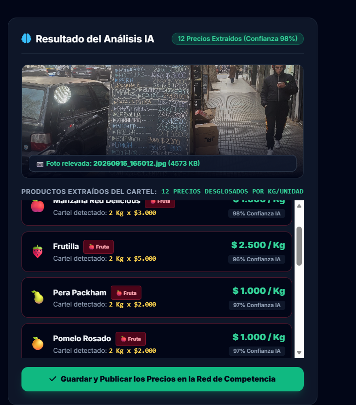

Mercado Central (Mayorista)
Verdulería de Barrio
Coto Digital
🥦 TOP 10 VERDURAS DE ARGENTINA (Mercado Central vs Coto)
10 Verduras Clave🍎 TOP 10 FRUTAS DE ARGENTINA (Mercado Central vs Plaza Italia vs Coto)
10 Frutas ClaveOTROS PRECIOS RELEVADOS POR FOTO (Verdulería Plaza Italia)
Precios AdicionalesPapa Spunta (x Kg)
Comparativa de precios en las verdulerías relevadas por foto
2 Puntos de Venta
Top Verdulerías Más Baratas
Análisis Auditado de Remarcación
Cargando insights de competencia...
Cargar Foto de Verdulería
Saca fotos de los pizarrones o carteles impresos. Podés subir múltiples fotos para acumular todos los productos.
📸
Arrastrá y soltá una o más fotos aquí
o hacé clic para seleccionar fotos / abrir cámara
Saca varias fotos si el cartel es muy largo; los precios se van sumando automáticamente.
Resultado del Análisis IA
Listo
📷 Cartel escaneado: Verdulería Plaza Italia (Foto #1)
Lista de Precios Acumulados:
16 Precios Desglosados
Red de Verdulerías Relevadas
Ubicaciones, barrios y fecha del último comprobante cargado por foto.
Puntos de Venta Relevados
Plan de Integración Técnica de VerduTracker AI
1. Estructura de Archivos
-
✓
comparador/verdulerias.html: Acumulación de múltiples fotos e identidades exactas de carteles. -
✓
comparador/verdulerias.js: Acumulador de productos y mapeo de nombres exactos. -
✓
comparador/verdulerias_data.json: Registro estructurado de comprobantes auditados.
2. Visión IA & Extracción
- ✓ Acumulación de Fotos: Podés tirar 2 o más fotos y los productos de cada cartel se van sumando en tiempo real.
- ✓ Nombres Fieles al Cartel: Nombres exactos tal como figuran en el pizarrón (ej: "Cebolla", "Papa Cepillada", "Batata").
- ✓ Publicación Multiproducto: Publica todos los items acumulados en el gráfico de barras automáticamente.